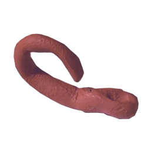
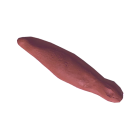
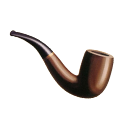

welcome to... S P O O N H O O D
(SPOONHOOD!) (?)
explore the questions that plague us all:
what makes a spoon a spoon? what makes a not-spoon a not-spoon?
what REALLY gives spoons their SPOONHOOD?
Rate each possible spoon on a scale of "not at all spoon" to "yes, very spoon".
Please be aware that these are clay artefacts. They are not crafted by a cow, as some may have insinuated.
They are also not... excrement, as may have been so rudely suggested (/declared) by others. They are HUMAN-HAND-CRAFTED. TERRACOTTA. CLAY. ARTEFACTS. (Except the last one.)
Thank you for your cooperation.
tip: hover or click an artefact to read its description

a clay artefact with a curling handle, much like the curled tail of a cartoon pig. The head of this artefact flattens out to a wide edge, sort of like a wooden spatula.

a long red clay artefact with a handle that curls up and over itself, like the tail of a scorpion. Its head is slightly wider, rounded, and mostly carved out.

a red clay artefact that looks like a rectangular block with rounded edges, slightly wider than it is tall. A small hole has been carved out on the longer top surface, centered close to the edge.

a long red clay artefact, widest at its middle, but it has a small widened end, which has a tiny divot (more, perhaps, like a light dent) on its surface. it is rumored to look like a fat blunt, but I personally disagree.

a red clay artefact with a squiggly handle, like a sidewinding snake, and a long hollow head, like a pitcher plant.

a red clay artefact with a long, straight handle. The head of this artefact is like a donut with a big hollow middle, pinched at one end where it meets the handle.

Magritte's famous painting of a pipe.
NOW. the new task.
since you are stationary, at present... please grab ANYTHING within reach.
now, describe below: What is the object, and how could you use it...
as a spoon?
now, describe below: What is the object, and how could you use it...
as a spoon?
since you are moveable, at present... please go find the nearest (actual) spoon.
now (perhaps with live action exploration as your guide), describe below: how could you use this object...
as something OTHER THAN a spoon?
now (perhaps with live action exploration as your guide), describe below: how could you use this object...
as something OTHER THAN a spoon?
survey says.... vvv